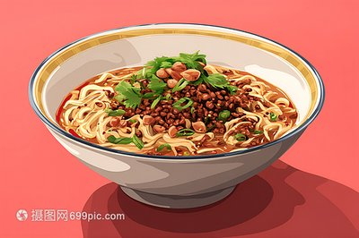

菜品介绍
担担面是四川成都和自贡著名的地方传统面食小吃，据说源于挑夫们在街头挑着担担卖面，因而得名。担担面是将面粉擀制成面条，煮熟，舀上炒制的肉末而成。成菜面条细薄，卤汁酥香，咸鲜微辣，香气扑鼻，十分入味。
担担面是川菜中代表性面食之一，2013年，担担面入选商务部、中国饭店协会首次评选的"中国十大名面条"。
历史背景
担担面距今已有超过一百五十年的历史。最早的担担面是由小贩挑着担子沿街叫卖而得名。过去，成都走街串巷的担担面小贩，用一铜锅隔两格，一格煮面，一格炖蹄膀或炖鸡。现在重庆、成都、自贡等地的担担面，多数已改为店铺经营，但依旧保持原有特色。
担担面的由来说法不一，但最有名的一种说法是，担担面自贡市一位名叫陈包包的小贩始创于1841年，因最初是挑着担子沿街叫卖而得名。过去，成都走街串巷的担担面小贩，用一铜锅隔两格，一格煮面，一格炖鸡或炖蹄膀。现在重庆、成都、自贡等地的担担面，多数已改为店铺经营，但依旧保持原有特色，尤以成都的担担面特色最浓。
制作步骤
1准备肉臊
猪肉剁成肉末，锅中放油，放入肉末煸炒至变色，加入芽菜、宜宾碎米芽菜一起炒香。
2制作调料
将酱油、醋、糖、花椒粉、红油辣椒、芝麻酱、蒜泥等调料放入碗中调匀。
3煮面
锅中加水烧开，放入面条煮熟，捞出沥干水分。
4组合
将煮好的面条放入调好料的碗中，舀上炒好的肉臊，撒上花生碎和葱花。
5拌匀
将所有材料充分拌匀，让每根面条都裹上调料和肉臊即可食用。

食材清单
主料
- 面条 200克
- 猪肉末 100克
辅料
- 宜宾芽菜 50克
- 花生碎 2汤匙
- 葱花 适量
调味料
- 红油辣椒 2汤匙
- 酱油 1汤匙
- 醋 1茶匙
- 芝麻酱 1汤匙
- 花椒粉 1茶匙
- 糖 1茶匙
- 蒜泥 1茶匙
营养信息
* 营养信息为每份估算值，实际数值可能因食材和烹饪方式有所不同